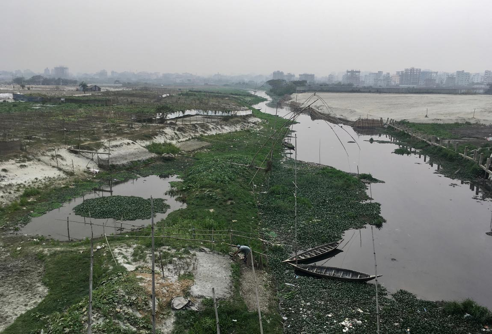
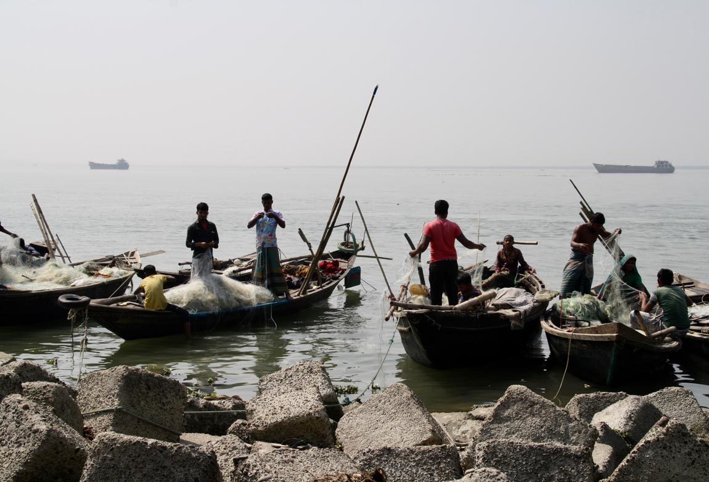
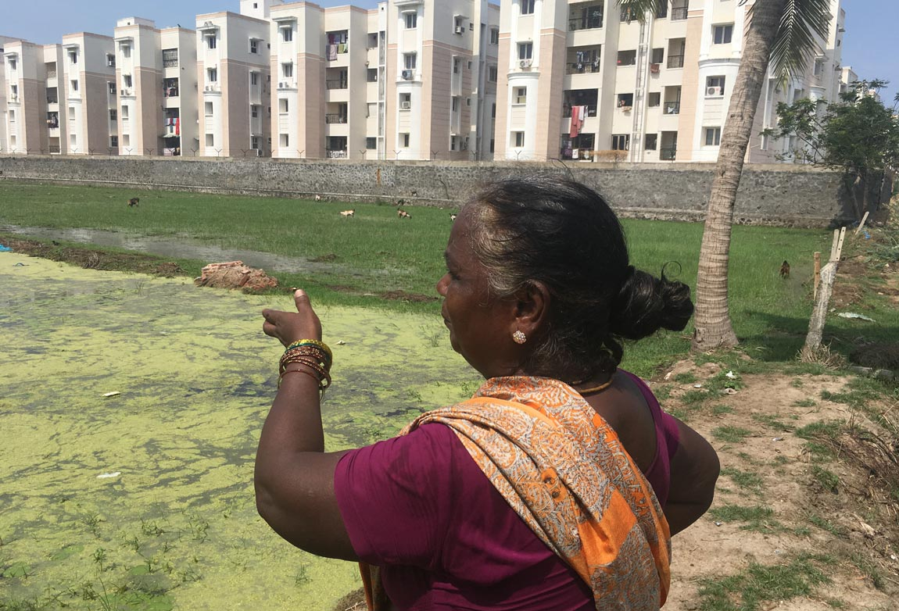
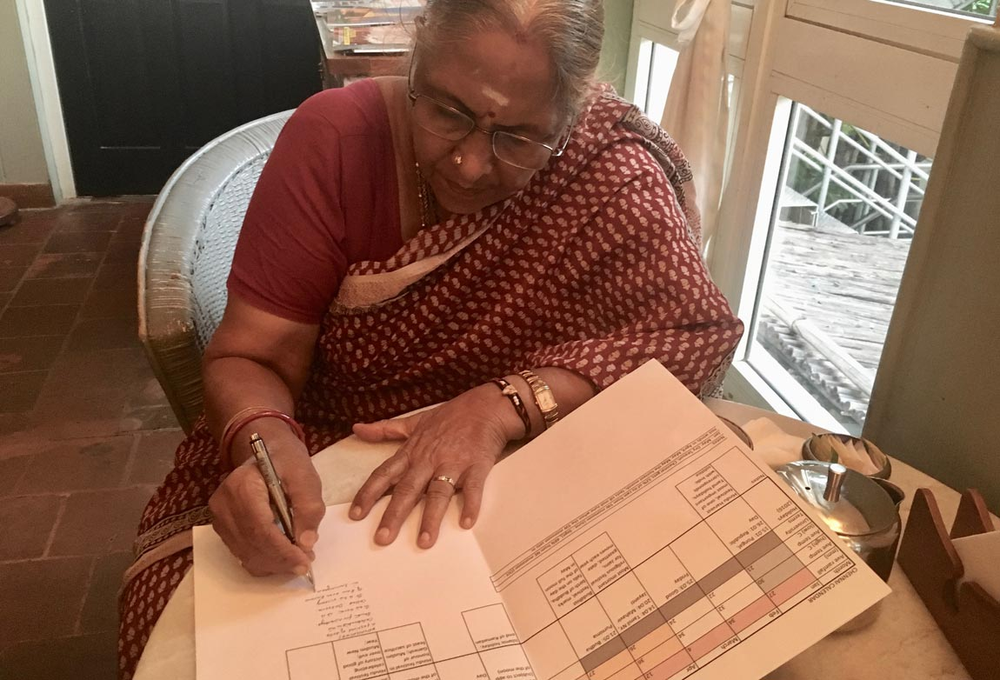
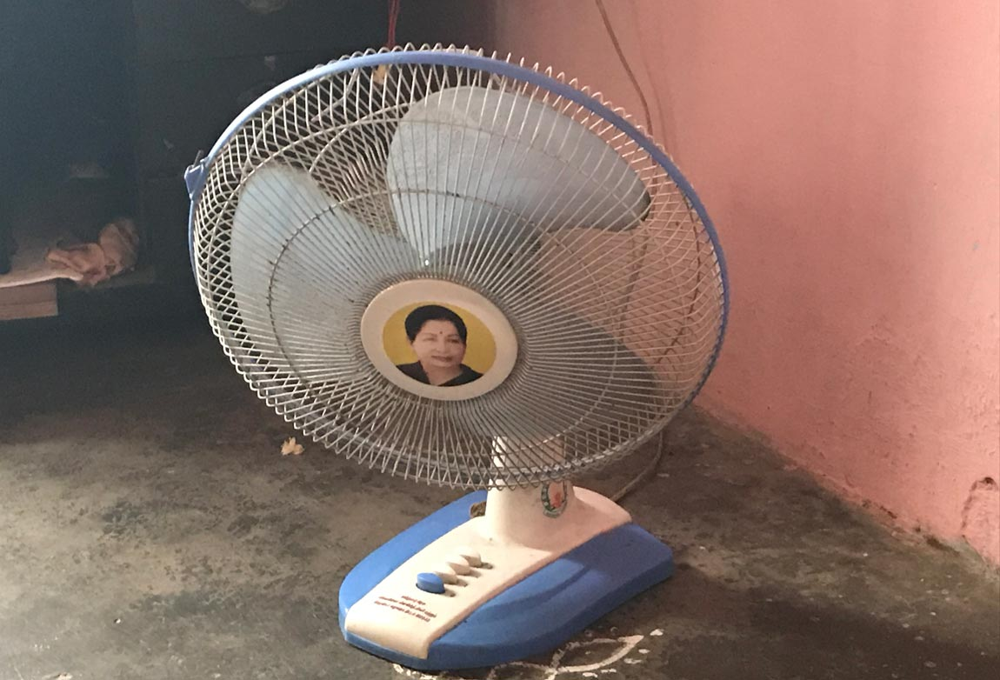
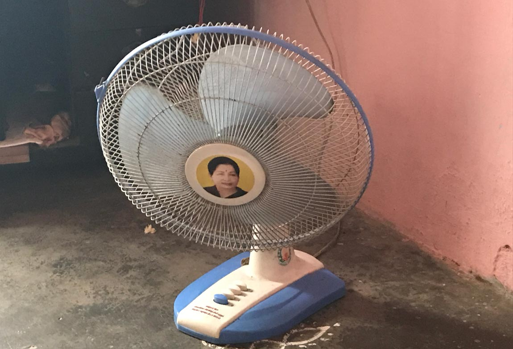
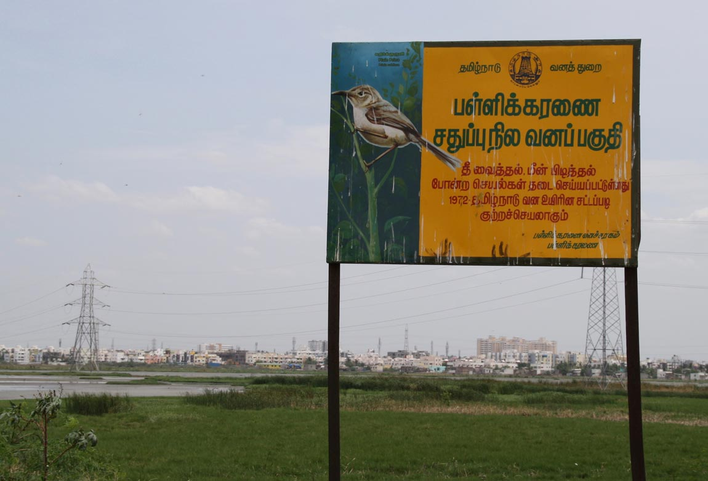
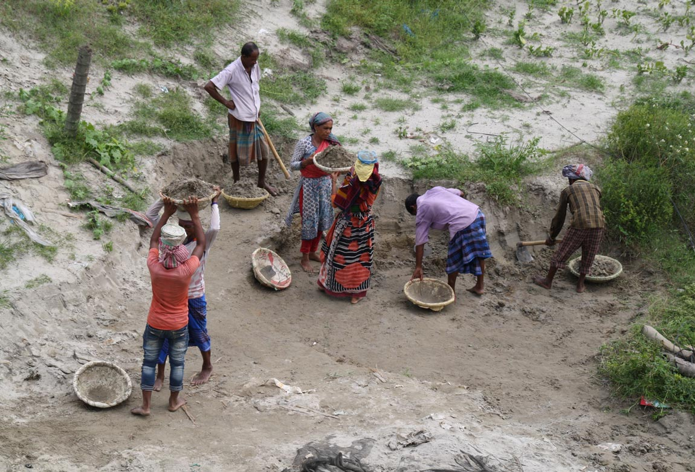
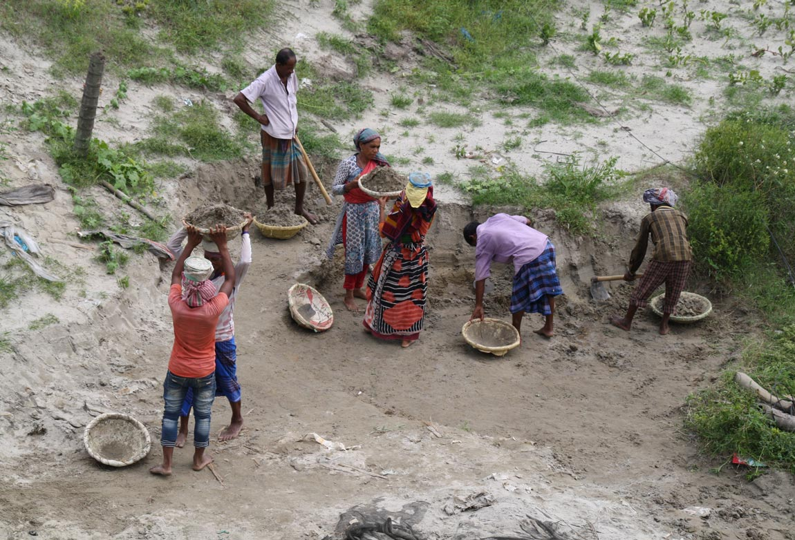

Intuiting a monsoonal
ethnography
Introduction


Throughout the project we have used ethnographic methods to engage with the monsoon as an earth system vastly distributed in time and space, whilst exploring the many ways in which monsoonal weather becomes entangled within urban environments. While ethnographic ways of working with meteorological phenomena are still emerging, finding ways to attune to the agentive capacities of weather is vital in light of uncertain futures.
Monsoonal fields
“Life in the open, far from being contained within bounded places, threads its way along paths through the weather world”.1
To engage with the monsoon in the context of three megacities, we took inspiration from multi-sited ethnography which follows people, connections, associations and relationships across space and time. Although we were aware that ‘fields’ are not bounded or static, nor exclusively human, the monsoonal framing of the project extended our attention beyond grounded sites to include atmospheric conditions. It forced us to consider how to explore each of the cities in relation to monsoonal dynamics that move through and connect spaces and places, surround and encompass them, whilst becoming tangled up and folded within them. Monsoonal paths, threads, conjunctions and juxtapositions emerged which formed logics of association and connections between sites.

Monsoonal knowings
Embarking on the first phase of fieldwork we had a very limited sense of how the monsoon was conceptualised and understood by people residing in the three cities. Initial attempts to explore people’s weather-worlds involved talking with meteorologists, academics, environmental activists, architects, planners, and urban dwellers from different socioeconomic backgrounds. Initial conversations about the monsoon in Chennai encompassed the traditional Tamil calendar, meteorological seasons and changing meteorological terminology, the personalities and characteristics of different monsoonal phases and suggestions that monsoon might be a colonial concept. These conversations revealed the diversity of human attempts to comprehend and make sense of this complex meteorological phenomenon and their entanglements over time.
“The northeast monsoon is a rogue monsoon and the southwest monsoon is a well-behaved monsoon, a monsoon that is predictable within certain limits”.2
 
Monsoonal doings
“Things are active not because they are imbued with agency but because of the ways in which they are caught up in the currents of the life-world”.3

To engage with the monsoon in the context of three megacities, we took inspiration from multi-sited ethnography which follows people, connections, associations and relationships across space and time. Although we were aware that ‘fields’ are not bounded or static, nor exclusively human, the monsoonal framing of the project extended our attention beyond grounded sites to include atmospheric conditions. It forced us to consider how to explore each of the cities in relation to monsoonal dynamics that move through and connect spaces and places, surround and encompass them, whilst becoming tangled up and folded within them. Monsoonal paths, threads, conjunctions and juxtapositions emerged which formed logics of association and connections between sites.
Monsoonal politics
“Paying attention to the weather as something in which we are intimately implicated, not just a disconnected backdrop to our human dramas, reminds us that we are weather-makers too”.4
 


Monsoon Assemblages was framed politically with an explicit focus on the influence of human activities, particularly rapid urban growth, on monsoon climates. Fieldwork in each city drew us to particular sites of urban expansion, revealing landscapes of accumulation and the geopolitical and macro economic dynamics driving urban growth. Work on water infrastructures and processes of encroachment made us aware of the inequities and power dynamics at play within urban landscapes. Monsoonal materials drew attention to insatiable urban appetites for soil, sediment and water and the role that cities play in driving extractive processes. Following monsoonal species we sensed the impact that rapidly expanding built environments are having on nonhuman worlds. Throughout the research it was clear that monsoon weather is political.
 



Monsoonal subjectivities
“Ethnographic knowledge emerges not through detached observation but through conversations and exchanges of many kinds among people interacting in diverse zones of entanglement”.5
Intuiting a monsoonal ethnography has been an emergent process. In the course of following monsoonal lines of flight, we have woven together fragments to form a partial and incomplete patchwork. The journey has been personal, transformational and contingent, responsive to the excesses, complexities and entanglements of monsoonal life-worlds. The monsoon has played an active role throughout, shaping and informing the process. Following the monsoon has opened avenues we may not otherwise have explored, forged connections between things we may have considered in isolation, and expanded our fields of perception beyond grounded happenings to include atmospheric concerns.
1T. Ingold, ‘Bindings against Boundaries: Entanglements of Life in an Open World’,
Environment and Planning A, vol. 40, no. 8, 2008, p. 1796.
2Chennai activist interviewed by Lindsay Bremner and Beth Cullen, 2017.
3T. Ingold, ‘Materials against materiality’ Archeological Dialogues, vol. 14, 2007, p. 1.
4A. Neimanis and J.M. Hamilton, The weather is now political, The Conversation, 22 May
2017, no page, https://theconversation.com/the-weather-is-now-political-77791.
5D. Culhane, ‘Imagining: An Introduction’, in D. Elliott and D. Culhane (eds.), A Different Kind
of Ethnography: Imaginative Practices and Creative Methodologies, Toronto, University of Toronto Press, 2017, p. 3.
Collaborative encounters
“Ethnographic knowledge emerges
not through detached observation
but through conversations and
exchanges of many kinds among
people interacting in diverse zones of
entanglement”.5
A diverse range of people generously
shared their time and thoughts
with us, conveying monsoonal
understandings through patient
explanations, drawings and sketches,
conversations and experiences,
meals and journeys.
Text by Beth Cullen.
Design by Jonathan Cane.
Introduction
Photographs by Beth Cullen.
Monsoonal fields
Photographs by Beth Cullen.
Monsoonal knowings
Photographs by Beth Cullen and Lindsay Bremner.
Video by Beth Cullen.
Monsoonal doings
Photographs and videos by Beth Cullen.
Monsoonal politics
Photographs by Beth Cullen and Lindsay Bremner.
Monsoonal subjectivities
Video by Beth Cullen.
Collaborative encounters
Photographs by Beth Cullen and Lindsay Bremner.